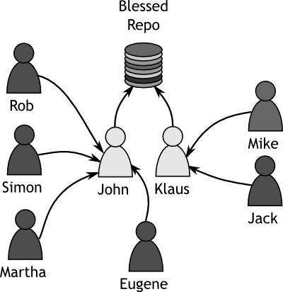

Week 2Day 1 - "We are coders, we use Git!"
Setting Up the Environment
So now we are ready to begin delving into and actually using Git, right? Well, not exactly.
First we have to decide upon how the workflow model we have envisaged is implemented in our version control system.
With Git being so versatile, it's both a blessing and a danger.
It is a good idea to define from early on, exactly how you would like the developers, lieutenants and dictators to behave, before you begin actually committing any code.
Sometimes this isn't possible.
It's quite feasible that you have never used a version control system like Git before and you begin by muddling your way through.
This is normal, but if you are in charge of implementing this type of system for a professional environment, you should really consider first how this is going to work.
Conceptually, the model which was discussed previously is easy to imagine.
We have two dictators, who both have access to the blessed repository and then several developers, who are going to have their changes reviewed and included, by the aforementioned dictators.
The physical representation of the workflow model is summarised in the diagram below.
|  |
|
Figure 1
Tamagoyaki Inc's Physical Structure |
|
The physical structure is all well and good, but it doesn't determine exactly how the data is moved, just who is responsible for it at each stage in the process.
What is required, is a detailed analysis of where the data flows from and to.
A data flow diagram is useful, but not essential.
However, we will create a slightly different form of diagram to show how the data will be moved from one person to another.
Before we go ahead and look at the diagram, let's go back to the trenches to see how the guys are coping with their repository design.
In the trenches...
"John, why are we all sat in here at 9:45am on Monday morning." Klaus whined.
"I haven't even ingested enough coffee to check emails yet, let alone meet with people."
John grinned, "I don't think any amount of coffee will help you there Klaus, it's your winning personality that will pull you through."
The rest of the team laughed and then subsided as John started drawing furiously on the board.
"So we have our physical model. We know which people are going to be in charge of things, but we don't know yet how to arrange our repositories."
"Good point," chimed Mike.
"So. Obviously we're going to have a blessed repository," said John, drawing a circle on the board.
He stepped back, one hand on chin.
"Then I would imagine Klaus and I will have clones of that repository on our local machines. We will then modify those and push our changes back up to the central copy."
"I thought Git didn't have a central copy?" asked Martha.
There were other moans and grunts.
"Well," said John,
"as far as I understand it, it doesn't. I mean Klaus and I will have local copies of the repository too. We will work on those and then sync our changes back to the server. It's a sync, moreover a copy. I think it's actually called a clone."
He nodded to himself, "And, since Klaus and I will hardly ever overlap on code, we shouldn't ever need to merge or deal with conflicts."
"But what about us monkeys?" asked Martha,
"Where do we get our clones from?"
"From the central server of course," Rob stated smiling.
"Yes," John said,
"but I think what Martha is trying to say, is how will you get your updates?"
He started to walk around the room, and one or two of the developers followed him as he reached the windows and leant on the sill.
"I guess you would merge your branch with the blessed one."
The room went silent and the only noise that could be heard was the rattling of the air conditioner in the ceiling above.
Simon spoke out, "Well, I was reading over the weekend about this thing called rebase and how in some cases a rebase is better than merging."
"What's rebase and how is it different to merging?" asked Mike.
"Well, rebasing is pretty darn clever. Think of it this way. You have an upstream branch, in this case, our blessed repository. You are happily making changes. When the upstream changes, you could merge the changes in from blessed. If you do this, you create a single commit which merges the changes in. It works, but..." he trailed off a little,
"it can cause problems in certain instances. A better way to handle it is with rebasing. Rebasing can take all the changes you have made, squirrel them away, pull down all the changes to bring it up to date, and then whack your changes on top.
It's not always the best choice, but we should consider it."
John breathed out, "It sounds pretty cool Simon, but one thing is abundantly clear, we need to learn more about the Git basics before we start delving into this merging and rebasing. Let's spend the rest of the day playing with some test repositories and reconvene tomorrow."
If you've never played with a version control system before it is a good idea to take some time to just play.
Pretty soon you'll have learnt the basics and will be in a position where you will want to put your newly honed skills into practice.
Though playing on test repositories is good, it is quite usual that you need to actually use the system in a real environment before real problems arise.
The rest of this chapter is a very quick introduction to Git.
It is presented as an introduction, because it is hoped and expected that the you will take some time out to get to know the system and how it works.
Knowing something about the underlying mechanisms of Git will definitely help you as you progress and will save you an awful lot of frustration later on when operations do not seem to function as you expect.
After Hours 2 focuses on the Git object model, something all Git users should have a basic understanding of.
Initialising A Repository
The first thing we need to do is to understand two very important things:
- How to create a Git repository
- What a Git repository actually is
The first of these is relatively easy to perform.
john@satsuki:~$ mkdir coderepo
john@satsuki:~$ cd coderepo/
john@satsuki:~/coderepo$ git init
Initialized empty Git repository in /home/john/coderepo/.git/
john@satsuki:~/coderepo$
If you are a Windows user, the above output may seem a little strange to you.
In the Linux world, the shell often has a much more descriptive prompt than on Windows.
In the case above, it takes the format <user>@<host>:<current_directory>.
The ~ is a shortcut meaning Home Directory, so really ~/coderepo actually means /home/john/coderepo.
What we've done here is create a new directory called coderepo, moved into it, and then run the git init command.
The result of this command is a new directory in the coderepo directory called .git.
This directory will hold a local copy of our entire repository.
This will allow us to create branches, merge changes, rebase things and ultimately push our changes to somewhere else.
Something that is crucial to the running of a repository, whether you are an administrator of Git, or a developer who is using it, is an understanding of how Git works.
It is fine to jump in and play with the repository and test the water, but before committing to using Git in a production environment, you should understand what Git actually does in the background in some detail.
During the writing of this book several people have told me that Git is one of the only version control systems where a good understanding of how the underlying system works is not just highly recommended, but bordering on essential.
Let us take a few minutes to talk about how Git works internally and how the data is actually stored.
Git doesn't store changes to files, but actual snapshots of files at specific points in time.
In fact, each time a commit is made, Git actually makes a record of how the entire filesystem looked at that point, even if only one file is changed.
It refers to files by calculating a SHA-1 hash of the file and using this as an ID, because the hash is unique to the contents of the file, it is easy to detect if a file has changed.
If the SHA-1 hash of a file changes, then the file must have been modified.
When a commit is made to the repository, Git stores a few things.
A commit object is created.
This contains, among other things, information about who made the commit, the parent of the commit and a hash that points to a tree object.
The tree object describes what the filesystem looked like at the time of the commit.
In other words the tree object, tells Git what files were in there.
Lastly, Git stores the files that were in the repository under their SHA-1 names in the objects directory.
Of course Git is super clever here because if you have exactly the same file in multiple commits, the SHA-1 hash of that file doesn't change and therefore Git only stores one copy of the file to save space.
The commit object is also referred to by an SHA-1 hash.
This is different to many other version control systems which use either a number that refers to the repository or a per file version number.
Getting used to seeing 40 character SHA-1 hashes can take a little time.
Saying "I need the commit referred to as bf81617d6417d9380e06785f8ed23b247bea8f6d," is certainly not as easy as saying you need revision 6.
However, Git handles these hashes well, and you can reference a commit using a few of the characters from the beginning, as long as those characters uniquely refer to that commit, i.e., as long as your choice is not in any way ambiguous.
The above description may sound rather foreign to you.
If this is the case, you should really spend some time reading through it again and possibly even jump to the After Hours section at the end of this chapter.
Understanding the way Git stores objects is a rather important aspect of Git and though it may seem rather confusing at first,
learning this will help you later on in understanding more complex matters.
|
|